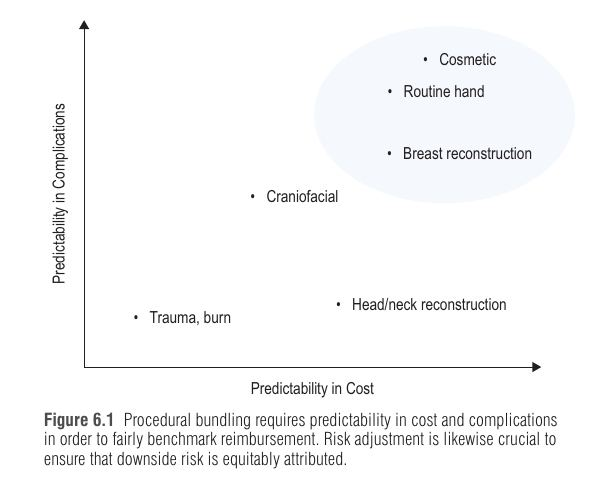

פרק עקרונות (לא פרק קליני-ניתוחי): הוא עונה על השאלה איך מודדים אם טיפול כירורגי "שווה" את מחירו, ולמה מנתחים פלסטיים יתבקשו יותר ויותר לתת דין וחשבון על עלויות ותוצאות. הערה: הפרק מתמקד במערכת האמריקאית, ולכן חלק מהמונחים (Medicare, MACRA) ספציפיים לה.
עלויות הבריאות בארה"ב עלו מהר בהרבה מהתמ"ג, מהשכר ומהאינפלציה ← ב-2017 הוצאה של כמעט 18% מהתמ"ג (כמעט כפול מכל מדינה מתועשת אחרת) ← הסיבות: מחירי יחידה גבוהים, הזדקנות, מורכבות מנהלתית, טיפול מקוטע, ותמריצים לא מיושרים במימון מבוסס-נפח (fee-for-service) ← תוצאה: חוב רפואי הוא גורם מוביל לפשיטת רגל פרטית, וכ-50% מהמטופלים מדווחים על התנהגות מתמודדת בעייתית (דילוג על תורים, אי-מילוי תרופות, ויתור על בדיקות).
התגובה היא קריאה לעבור לטיפול בעל ערך גבוה (value-based care) – מושג שתיאר Michael Porter במאמר ב-NEJM ב-2010: ערך = תוצאות ליחידת עלות. תשלום מבוסס-ערך מקשר את התגמול לערך ולא לתפוקה.
למה ניתוח מתאים במיוחד לגישה הזו? (1) אופי אפיזודי (למשל תקופה גלובלית של 90 יום), (2) גישה בין-תחומית (גריאטריה, הרדמה, פנימית, רדיולוגיה), (3) תרבות של מדידת תוצאות (ACS-NSQIP, STS, TOPS), (4) שונות גבוהה לא רצויה בהוצאות ובתוצאות. ניתוח מהווה 51% מהוצאות Medicare.
ובפלסטיקה? אופי אלקטיבי של הרבה התערבויות ומטרות של איכות חיים ותפקוד ← על המנתח להיות מודע ל"טביעת הרגל הכלכלית" שלו. דיווח חיצוני שקוף יזכה מרכזים גדולים ומתמחים – יחידות תרגול משולבות (IPUs – Integrated Practice Units) המתמקדות במצב אחד (סרטן שד, שפה וחך שסועים) ומנצלות יתרון לגודל.
ההגדרה בפלסטיקה: ערך = אינטגרציה של תוצאות קליניות, תוצאות מדווחות-מטופל ועלות השירותים.
| כלי | התחום |
|---|---|
| BREAST-Q | ניתוחי שד אונקולוגיים ואסתטיים |
| FACE-Q | ניתוחי פנים אונקולוגיים ואסתטיים |
| BODY-Q | עיצוב קווי גוף (body contouring) |
| CLEFT-Q | שפה וחך שסועים |
הכלים נקלטו בינלאומית ועל ידי גופים ממשלתיים, כולל ה-FDA, ומשמשים הן לקבלת החלטות לחולה בודד והן כמכשיר מחקר.
| סוג עלות | מאפיין | דוגמאות / משמעות |
|---|---|---|
| קבועה (Fixed) | לא משתנה עם כמות או תדירות הטיפול; לא מתומחרת בקלות, משתנה לעיתים רחוקות | תשתית, עלויות מוסדיות קבועות |
| משתנה (Variable) | תלויה בכמות ובעוצמת הטיפול; רגישה להעדפת הקלינאי | שתלים, תרופות, אספקה ← אפשר לחסוך בה תוך זמן קצר |
בפועל הרבה עלויות לא נכנסות בבירור לקטגוריה אחת, ולכן Robert Kaplan (הרווארד) הציע את ה-Time-Driven Activity-Based Costing – TDABC (TDABC): מודד את משאבי הזמן והצוות שהושקעו בטיפול ומחשב עלות מדויקת יותר משיטות קודמות (activity-based costing). אומת בניתוחי לב, אורתופדיה, אורולוגיה וקרניופציאלי.
שלבי TDABC: (1) מפת תהליך (process map) לכל אפיזודת הטיפול – כל פעילות, משך, משאב, צוות וציוד, ממעקב ושיחות עם הצוות ← (2) רישום הזמן לכל שלב ← (3) עלות ישירה של כל משאב מרישומי בית החולים ונתונים ארציים/אזוריים ← (4) חישוב שיעור עלות הקיבולת (capacity cost rate) בדולרים לדקה.
דוגמת הפרק: מפת תהליך לשחזור שד מיידי אחרי כריתה – קבלה, אזור טרום-ניתוחי (הסכמה, סימון), חדר ניתוח (הרדמה, כריתה + SNBx, שחזור, ספירת מכשירים), PACU, יום ניתוח 0 ויום 1.
| מוסד / תחום | התערבות | תוצאה |
|---|---|---|
| Boston Children's – פלגיוצפליה (plagiocephaly) | TDABC + מפות תהליך, שינוי שלבים קריטיים בזרימת העבודה | שיפור של 19% בזמן ביקור, אפשרות לראות שני מטופלים נוספים ביום, ללא פגיעה בשביעות רצון או בתוצאה |
| MD Anderson – שחזור שד מיקרווסקולרי | תוכניות ERAS מול טיפול רגיל (TDABC + סקירה שיטתית של חמישה מחקרי עוקבה) | עלות-תועלת ותוצאות עדיפות למרות עלות תרופות וצוות גבוהה יותר |
ניתוח קוסמטי הוא חריג: אין צד שלישי משלם. הפרק מנתח את ההשלכות:
| היבט | טיפול עם מבטח (רוב הרפואה) | ניתוח קוסמטי (תשלום ישיר) |
|---|---|---|
| אחריות פיננסית | המטופל נושא מעט ← סיכון מוסרי (moral hazard): צריכת-יתר | המטופל משלם ← אין עידוד לצריכת-יתר |
| שקיפות מחיר | המבטח "מסתיר" מחיר; אי אפשר להשוות | מחירים שקופים, אפשר "לעשות קניות" ← שוק עם היצע וביקוש |
| שירות ואחריות לסיבוכים | לא מתומרצים כספית | שירות ותוצאה קריטיים (הפניות מטופלים); ניתוח חוזר עלול להיות על חשבון המנתח ← תמריץ לבחירת מטופל נכונה |
| דרכי הוזלה | – | זמן ניתוח קצר, מרכז ניתוחי עצמאי, מגש מכשירים פשוט, הימנעות מציוד/התקנים יקרים, חיסכון באספקה |
הסתייגות: ניתוח קוסמטי כ"סטנדרט הזהב" לטיפול מבוסס-ערך הוא טיעון פגום – בגלל היעדר דחיפות והכרח. עם זאת, העקרונות (עלות נמוכה וטיפול ממוקד-מטופל) ראויים לתשומת לב.
תהליך שבו תקשורת ויחסי מטפל-מטופל משמשים לזיהוי ערכים, העדפות ומטרות המטופל, ושם אותו "על בסיס שווה" עם הרופא לאחר דיון בסיכונים, יתרונות, פשרות ועלות. הכלי המעשי: עזר החלטה (decision aid) – מתקפים לנשים בסרטן שד (כריתה מונעת ושחזור), וגם בכירורגיית יד (דלקת מפרק שורש כף היד, תסמונת התעלה הקרפלית).
משווה את השיפור המצטבר שמחדשנות (תרופה, מכשיר, טכניקה) לעלות המצטברת. חידוש "דומיננטי" (dominant) = תוצאה טובה יותר בעלות נמוכה יותר – נדיר; בדרך כלל החידוש יקר יותר.
מסביר פער בין ראיות לפרקטיקה. הדוגמה: ראיות ברמה I מראות שאנטיביוטיקה מניעתית ממושכת (מעבר למתן תקופתי-ניתוחי) אחרי שתלי שד אינה מונעת זיהום, ובכל זאת רבים ממשיכים לרשום. מסגרת CFIR – Consolidated Framework for Implementation Research כוללת תחומים: ההתערבות עצמה והראיות, ההקשר המקורי מול המוסד המאמץ, האנשים המעורבים (בהתחלה ובקיימות) ואסטרטגיות (למשל Leadership and Organizational Change).

מקרה אפיזודי → מחיר יעד (target price) או סכום גג אחד לכל השירותים באפיזודה (כל האתרים והספקים) → גורם אחראי (risk): מנתח או בית חולים, אחראי להוצאה ולתוצאה → לרוב אופק זמן (30 או 90 יום) ואירוע מפעיל שניתן לזיהוי בתביעות (למשל אשפוז לפלאפ חופשי) → קבלת מלוא הסכום מותנית במדדי איכות (למשל קבלה חוזרת תוך 30 יום, זיהום אתר ניתוח).
אפשר לתכנן חבילה ברמת המצב (סרטן שד) או הפרוצדורה (פלאפ חופשי). חבילות מעודדות תיאום בין אתרים וספקים ושימוש בפרוטוקולים (ERAS). איור 6.1: חבילה הוגנת דורשת צפיות בעלות וגם צפיות בסיבוכים: קוסמטי, יד שגרתית ושחזור שד קרובים לצפיות הגבוהה; קרניופציאלי באמצע; טראומה/כוויות וראש-צוואר הכי פחות צפויים – שם התאמת סיכון קריטית.
O – Outcomes: תוצאה קלינית וסיבוכים (עם התאמת סיכון).
P – PROMs: איך המטופל מרגיש (BREAST-Q, FACE-Q, BODY-Q, CLEFT-Q).
C – Cost: עלות מחזור טיפול שלם (TDABC), כולל רעילות פיננסית.
וגם ארבעה ראשי תיבות לשנן: TDABC (מדידת עלות), QALY/WTP (עלות-תועלת), CFIR (יישום), APM/MACRA (תשלום).
דמייני מאזניים בשוק: בכף אחת מניחים תוצאה קלינית ואת מה שהמטופלת אמרה ב-PROM, ובכף השנייה תווית מחיר שעליה כתובה העלות האמיתית – לרבות שכר שאבד. רק כשהכף הראשונה כבדה מהשנייה, המאזניים "משלמים" למנתח (תשלום מבוסס-ערך).
הערה: לא הוטמעו סרטוני וידאו כיוון שלא אומתה התאמה לתוכן הפרק.
מנהלת שירות שחזור שד בבית חולים גדול רוצה להפוך את התוכנית ל"מבוססת-ערך". הצוות ממפה את כל המסלול של מטופלת – מהקבלה, דרך חדר הניתוח ועד יום 1 – ורושם את משך כל שלב ואת הצוות המעורב. משם מחשבים עלות לדקה. במקביל מחלקים שאלון BREAST-Q לפני הניתוח ושנה אחריו. הם מציעים להציע למטופלות הבנה של החלטה (כריתה מונעת ושחזור) באמצעות כלי עזר, וחברת ביטוח מציעה "תשלום חבילתי" ל-90 יום לאחר אשפוז לפלאפ DIEP.